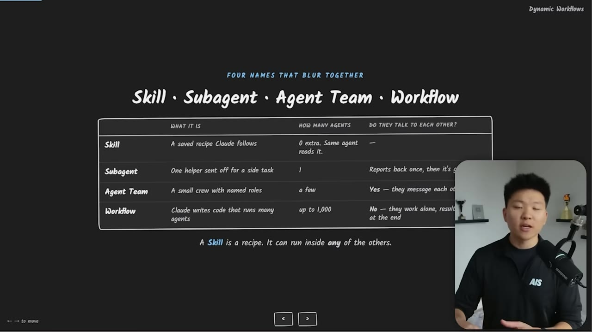
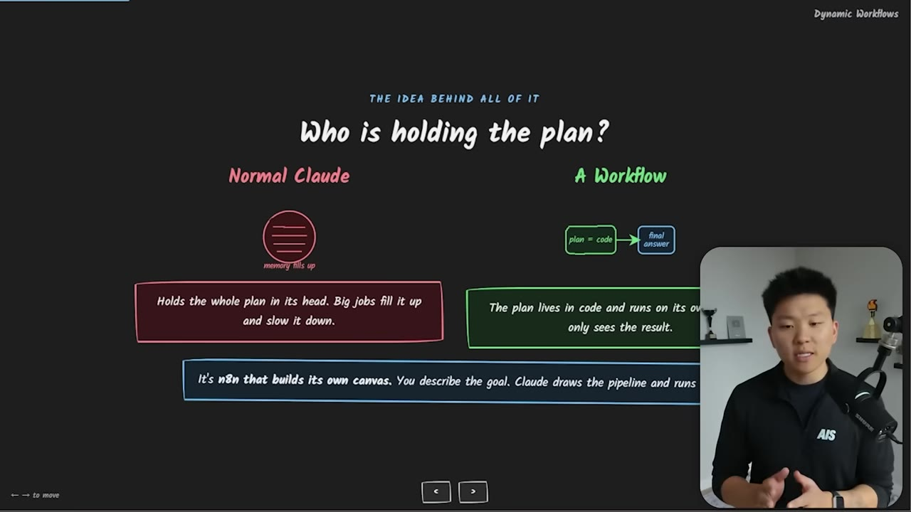
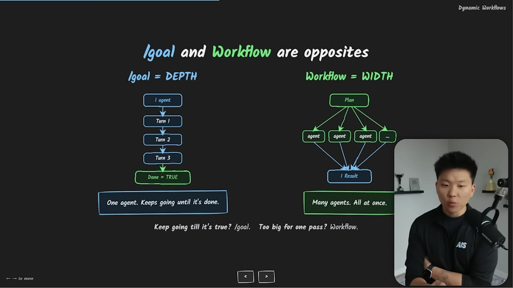
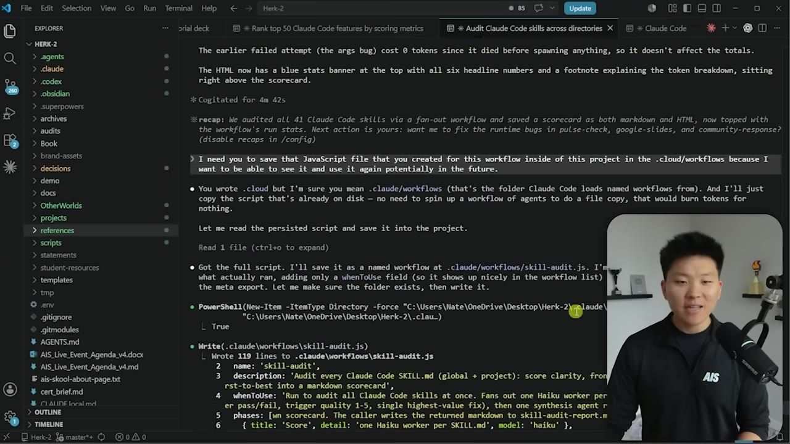
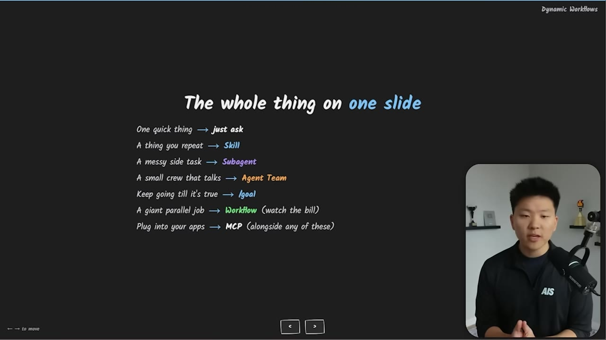

Claude Code Dynamic Workflows Clearly Explained
Nate Herk breaks down Claude Code's new Dynamic Workflows feature — what it is, how it differs from skills, sub-agents, and agent teams, and when (and when not) to use it.
Watch on YouTubeTL;DR
- Dynamic Workflows spin up dozens of agents in parallel; each agent is a full Claude call with its own context window
- /goal is depth (one agent loops until done); workflow is width (many agents at once, then synthesize)
- One workflow prompt burned through half of a $200/month plan — scope explicitly or pay for it
- Workflows are worth it for broad sweeps (codebase audits, 400-file migrations); overkill for single edits
- You can save and re-run workflows; they generate a JavaScript file you keep
01 · The $200 workflow
What are Dynamic Workflows
Claude Code Dynamic Workflows — released with Opus 4.8 — let Claude Code write a JavaScript script that spins up dozens (even hundreds) of sub-agents in parallel, each doing a piece of the job. Results get merged and sent back to the main session.

The key distinction: unlike sub-agents that work in isolation, or agent teams that share a task list, a workflow is Claude Code writing a script — a saved JavaScript file — that orchestrates everything. Claude sets the end goal, the script handles the execution.
I in one workflow prompt burned through half of my $200 a month subscription with just one prompt and it took a little over 30 minutes.— Nate Herk
02 · Skill vs Sub-agent vs Agent Team vs Workflow
Who holds the plan?
The ladder of complexity:

- Skill = a reusable recipe. You or a sub-agent can run it.
- Sub-agent = a parallel worker with its own context window. Doesn't talk to other agents.
- Agent Team = a small crew that talks to each other, shares a task list. Like a war room.
- Workflow = Claude Code writes a JavaScript file that runs the show. Can be hundreds of agents. No shared context between them — they work alone and return results.
The big separation: who holds the plan. In normal Claude, the plan lives with Claude. In a workflow, the plan lives in the JavaScript file.

03 · /goal vs Workflow
Depth vs Width
This is the core distinction Nate found most confusing.

- /goal is a depth play — one agent (or a few) takes multiple turns, looping until
done == true. Could run for hours. - Workflow is a width play — 50+ agents, all executing on a plan established upfront. They don't check against criteria; they do their job and return.
The killer question: does this task break into many pieces that can run individually at the same time? If yes → workflow. If no → /goal or just ask Claude directly.
If you want something to keep going until an objective criteria has been met, use /goal. And if you want a giant parallel job, use the new dynamic workflows.— Nate Herk
04 · Cost
Each agent is a full Claude call
Every agent in a workflow is a full Claude call with its own context window. It has to read through its own context. Many get spun up. It gets expensive fast.
Most tokens are input (not output), which is cheaper per token but the volume adds up. Nate's skills audit used 5 million input tokens across 41 Haiku agents.

The mitigation: be explicit and specific about what you're looking for. Bound the scope, name the deliverable, and your sub-agents can all run on Haiku.
Do the agents talk to each other? No. They've got sub lanes and they talk back to one result. Whereas an agent team is kind of like more of a group chat. It's legitimately a team.— Nate Herk
05 · The whole thing in one slide
When to use what
The summary slide Nate put at the end of the video:

| Task type | Tool |
|---|---|
| Quick thing | Just ask Claude Code |
| Thing you repeat | Skill |
| Messy side task | Sub-agent |
| Small crew that talks together | Agent Team |
| Keep going until objective met | /goal |
| Giant parallel job | Dynamic Workflows |
Be explicit — vague requests = runaway tokens
Save workflows — they generate a .js file you can rerun
Watch with /workflows — monitor running agents, token usage, tool calls
/ultracode = X-high effort + workflows by default. Very expensive.
Does this break into many pieces that can run individually of each other at the same time? If that's true, then go ahead and try out a workflow.— Nate Herk
:::